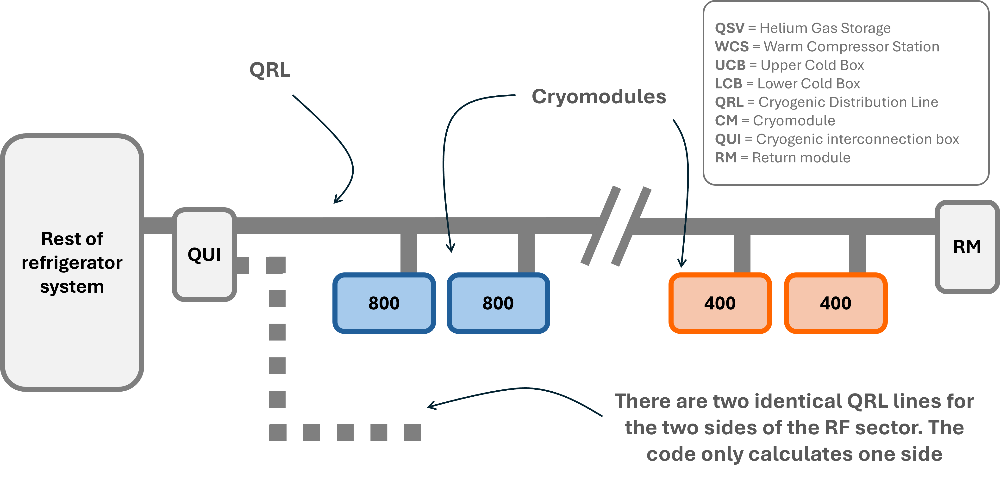
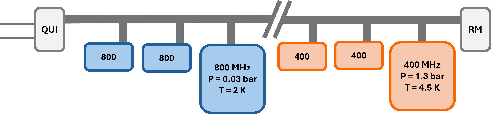
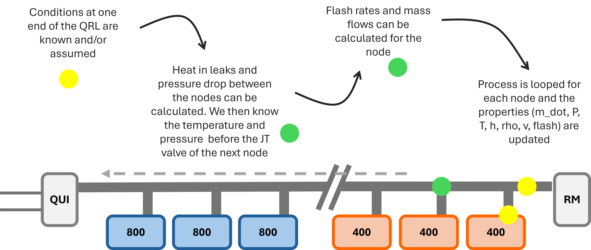
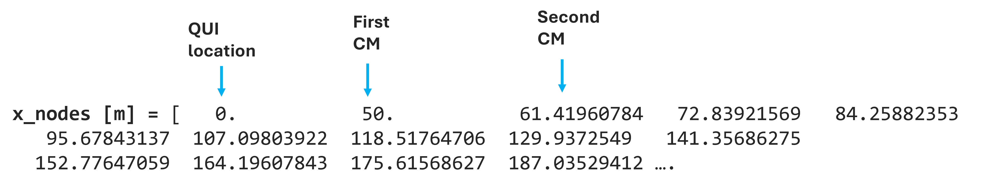
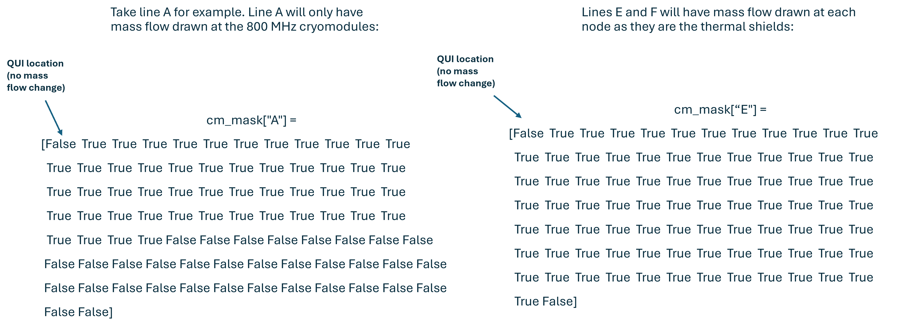
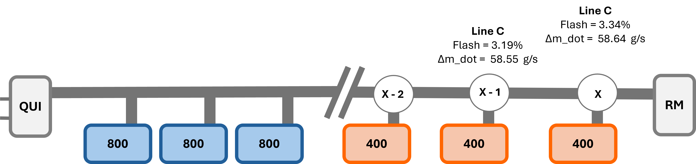
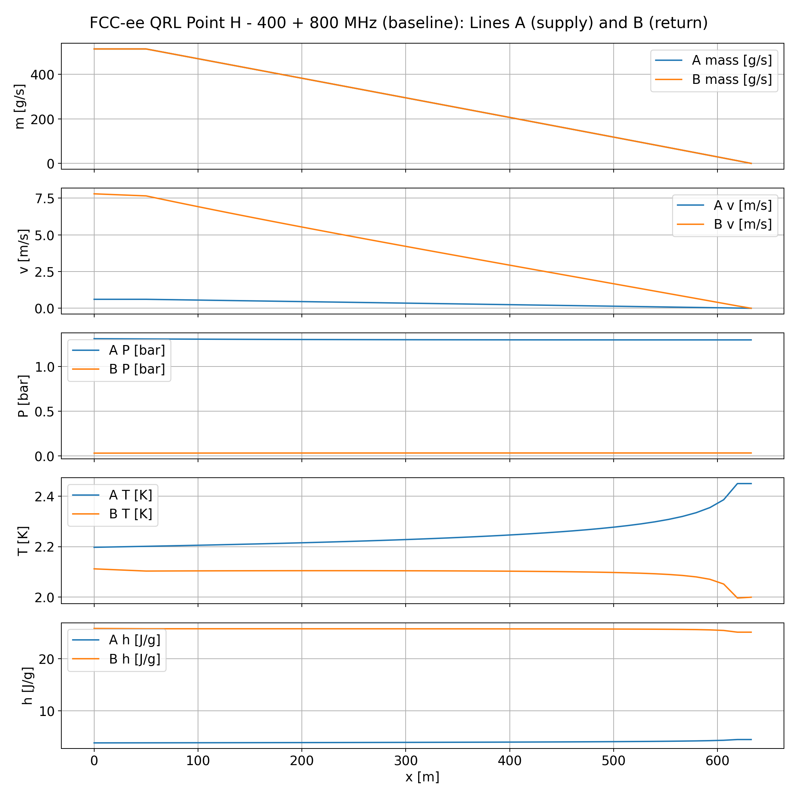
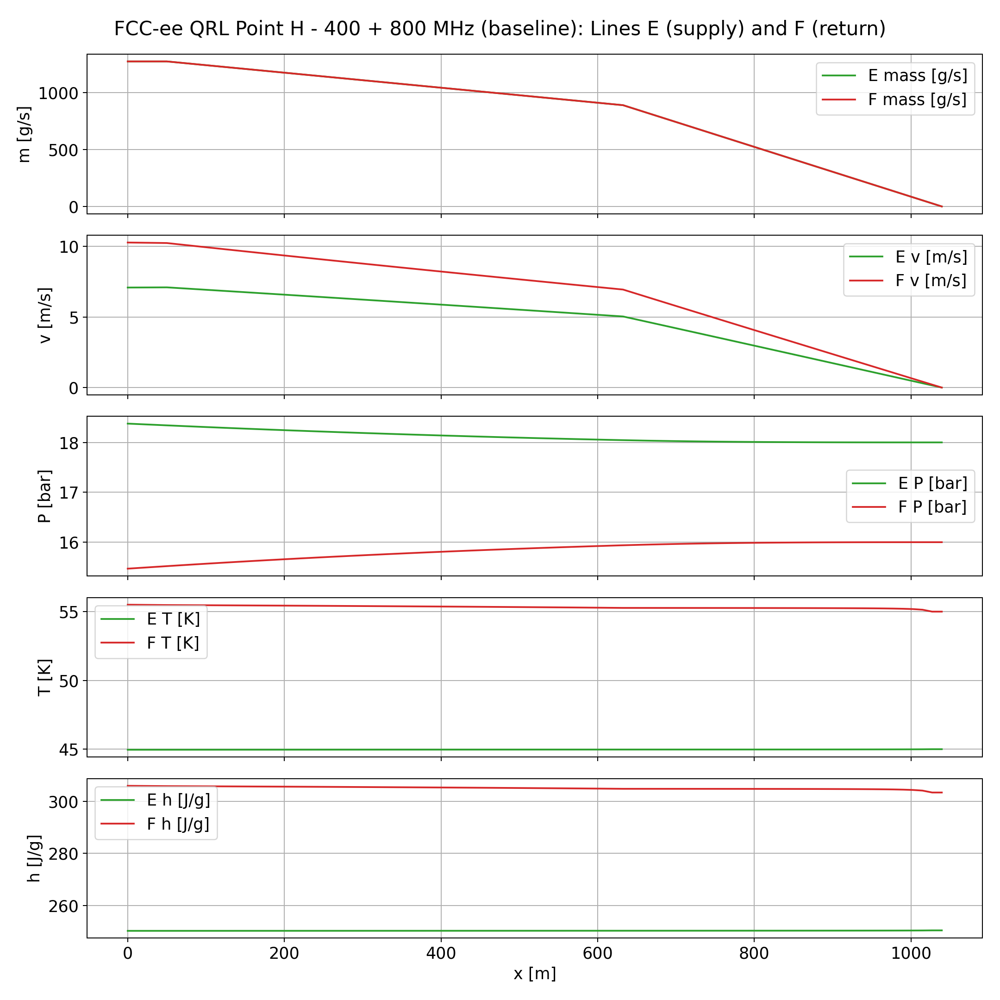

FCC-ee Cryogenic Distribution and Pipe Sizing
As part of my work in the cryogenics group at CERN, I've been developing a Python tool to calculate helium flows and size the distribution pipes for the proposed FCC-ee accelerator. The pipe sizes are already being used in tunnel integration studies, and the results will also be useful for future calls for tender and the design of the refrigeration system.
The engineering problem
FCC-ee would use superconducting radiofrequency cavities to accelerate particles. These cavities sit inside assemblies called cryomodules, which need helium cooling to keep them close to absolute zero. The QRL, or cryogenic distribution line, carries helium to and from the cryomodules along the accelerator tunnel.
The goal is to find pipe sizes that can carry the required helium flow without exceeding the allowed pressure drop. Smaller pipes take up less space in the tunnel, but also create more resistance to flow. We need to know how the helium conditions change along the line to work out what sizes are suitable.
The QUI is the cryogenic interconnection box between the QRL and the rest of the refrigeration system. The model calculates the pressure, temperature, and mass flow needed there, which gives us inputs for designing the refrigerator later.

For the 400 and 800 MHz configuration shown here, six helium pipes run in parallel inside the QRL. The frequencies refer to the cavities inside the cryomodules:
- A and B: supply and return for the 800 MHz cryomodules, whose helium baths operate at 2 K.
- C and D: supply and return for the 400 MHz cryomodules, whose helium baths operate at 4.5 K. Line C also supplies cooling for the power couplers, which feed radiofrequency power into the cavities.
- E and F: supply and return for the thermal shields, at around 45 and 55 K. These shields intercept heat before it reaches the colder parts.
My contribution
I started with a sizing model developed by colleagues. It already calculated pipe diameters and pressure losses, but used fixed temperatures and a fixed amount of helium drawn by each cryomodule type. I wanted to account for how the helium changes along the line and make it easier to change the layout as the FCC design evolves.
| Earlier model | What I added |
|---|---|
| Calculated the minimum pipe diameter needed to meet the pressure-drop budget. | I added a lookup that selects the smallest suitable standard DN size from a stainless-steel tube table based on EN ISO 1127. |
| Fixed temperatures, flash fractions (the share of helium that becomes vapour during expansion), and flow demands per cryomodule type. | Helium conditions and the resulting flash and flow demand are calculated at each cryomodule connection. |
| Heat entering the QRL was included in the cryomodule heat loads. This treated pipe heat as extra cryomodule cooling demand, giving an incorrect mass-flow distribution along the QRL. | Heat entering the pipes is applied along their length, in watts per metre. |
| The layout was tied to a particular order of cryomodules. | The cryomodule type, number, order, spacing, and connected pipes can be changed through the inputs. |
| The same thermal-shield flow was assigned to every cryomodule. | Separate shield cooling demands for each cryomodule type, plus power-coupler flow from line C. |
| Separate scripts covered particular layouts. | Multiple design cases, including 400, 600, and 800 MHz options and splitting the cooling between several supply/return circuits. |
This has been useful for studying different cryogenic arrangements. For example, I can compare circuits serving consecutive groups of cryomodules with circuits serving alternating cryomodules, and see how that changes the required pipe sizes.
How the model works
The model calculates the helium conditions along one side of the QRL, one connection at a time. I call each connection a node. This can be a cryomodule, the QUI, or the return module at the far end of the line.
For each pipe segment, the code calculates the pressure drop and heat entering the helium. At each cryomodule, it calculates how much helium is needed and combines the returning flows. Repeating this along the line gives the mass flow, pressure, and temperature at every node.
I then use these calculations to select pipe diameters that keep the pressure drop below the budget, meaning the maximum pressure loss allocated to each pipe.

Assumptions and current limitations
The results depend on the layout, heat loads, and operating conditions put into the model. For the case shown below, I use:
- Steady operating conditions, with prescribed temperatures and pressures inside the cryomodules.
- Estimated heat loads for each cryomodule and a heat inleak per metre of QRL.
- Assumed conditions at the far end of the line, from which the code calculates back towards the QUI.
- Pressure-drop budgets based on operational experience from the LHC, CERN's existing Large Hadron Collider.
There are still a few things to improve:
- Return-module behaviour: the extra circulation needed at the far end and how it returns between the pipes still need to be defined. The code has a simplified allowance for this, but the Point H case shown here uses zero extra end flow.
- Valve pressure losses: the model accounts for helium turning into vapour during Joule–Thomson expansion, but detailed valve hydraulic and local pressure-loss calculations are not included.
- Other operating modes: cold standby, when the equipment is kept cold without normal accelerator operation, still needs to be assessed.
Pipe-sizing results
The results below are for the displayed Point H baseline, with 400 and 800 MHz cryomodules. Point H is one of the planned radiofrequency installation areas. For this case, all six selected pipe sizes keep the calculated pressure drop below the allocated budget.
| Pipe | Selected size | Mass flow at QUI (g/s) | Pressure drop (mbar) | Budget (mbar) |
|---|---|---|---|---|
| A2 K circuit supply | DN80 | 513.4 | 13.46 | 25 |
| B2 K circuit return | DN350 | 513.4 | 1.79 | 3 |
| C4.5 K and power-coupler supply | DN125 | 1955.9 | 64.63 | 130 |
| D4.5 K circuit return | DN200 | 1918.9 | 33.21 | 70 |
| EThermal-shield supply | DN100 | 1271.2 | 376.49 | 600 |
| FThermal-shield return | DN100 | 1271.2 | 530.32 | 600 |
DN is the nominal pipe-size designation. The calculation uses the actual internal diameter of the selected pipe. Values are rounded from the report below.
The pipe sizes are used for tunnel integration studies and will help define future calls for tender. The helium conditions and mass flows at the QUI will also help with the design of the rest of the refrigeration system.
The full results are shown one line at a time below. Click the line names to see the conditions at each node, along with the selected diameter, total pressure drop, and maximum velocity. A PDF summary is also available.
Model checks and validation
I compared my results with two colleagues' models: an Excel model and the earlier Python sizing model. The first comparison helped me notice a mistake in my code. After fixing it, the pipe-sizing, mass-flow, and pressure results I compared agreed within approximately 1–5%.
This comparison was a useful check, but the model has not been validated against experimental or operating measurements. Comparing it with a suitably matched operating system, such as an existing cryogenic distribution line, would be a possible next step.
Technical details
For a closer look at the calculation, I've broken it down below using diagrams and examples from the code. Click any figure to open it at full size.
Explore the calculation in detail
Step 0 — Set the starting conditions
I start with the operating conditions we want inside the cryomodules and assumed conditions at the far end of the QRL. The calculation works back towards the QUI to find the conditions needed there.

The same sequence repeats along each pipe: calculate pressure loss and heat inleak, update the helium state, then account for the flow drawn or returned at the next cryomodule. Enthalpy, shown as h, tracks the energy carried per unit mass of helium.

Step 1 — Build the layout
I define the layout as blocks of cryomodules. Each block has a type, a number of
modules, a spacing between connections, and a list of connected helium pipes.
build_layout() turns these inputs into positions along the QRL.

The code also makes a true/false list for each pipe, called a mask. True means helium enters or leaves that pipe at the node. False means the pipe continues past it without exchanging flow. This lets the same calculation handle different layouts.

Step 2 — Calculate conditions at each node
The helium pipes are calculated in supply/return pairs. For every segment, pressure loss depends on the local flow, helium properties, and pipe geometry. The heat entering the pipe changes the helium's enthalpy, and the code uses pressure and enthalpy to update its temperature and density.

Supply flow and flash
When helium passes through a Joule–Thomson valve into the cryomodule bath, some of it becomes vapour. This is called flash. The amount depends on the incoming helium state, so the required supply flow changes from one cryomodule to the next.
The cryomodule heat load sets the liquid flow needed. The code then adds the flow needed to account for flash. For example, if 10% becomes vapour, delivering 10 g/s of liquid requires about 11.1 g/s before the valve.

Mixing the return flows
On the return side, helium from a cryomodule joins the flow already in the pipe. I use mass and energy balances to calculate the combined flow and enthalpy before continuing to the next segment.

Step 3 — Read the profiles
The code plots pressure, temperature, enthalpy, mass flow, velocity, density, and flash, and makes tables for the main connection points. These plots help me see where conditions change along the line.
The plots below are examples from earlier model runs, included to explain how to read the output. Their values differ from the pipe-sizing case in the results section. Use that section's table and interactive report for the displayed sizing results.

